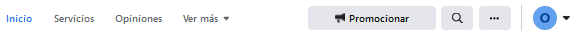
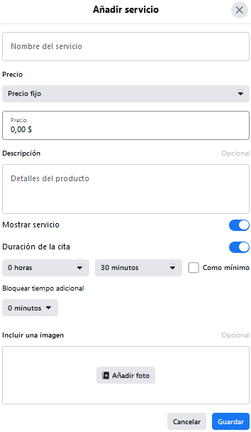

C. Barra de Inicio y navegación local
Si la barra de menús A nos permitía ir a nuestro perfil, esta barra de menú C nos permite movernos dentro de la propia página en la que nos encontramos.
Los items de esta barra van variando conforme vamos operando. Así, por ejemplo, si habitualmente usamos la opción del menú , entonces en dicha barra aparecerá el botón , para acceder más rapidamente.

Veamos un poco mejor las opciones.
 Inicio
Inicio
El botón  permite ir al inicio de la página en la que estamos
permite ir al inicio de la página en la que estamos
Servicios
El botón permite ver los servicio que ofrecemos o añadir servicios. Un servicio consta de un precio, una duración y un detalle. Un ejemplo es un servicio de taller (reparación), de rehabilitación, masajista, etc.
En esta imagen vemos la ventana de creación de un servicio, a la cual se puede acceder mediante el botón de servicios.

Opiniones
Accede a las recomendaciones opciones que otros usuarios tienen de esta página. Al inicio de nuestra página estará a 0, pero conforme avanza podemos ver las opiniones que otros usuarios tienen de nosotros. Estas opiniones son relativas a la página en la que estamos; a diferentes páginas, diferentes opiniones.
También nos permite opinar sobre el servicio de opiniones que ofrece Facebook, llegando estas opiniones al equipo de Facebook.
Ver más opciones
Nos permite ver más opciones.
Veamoslas en los puntos siguientes un poco más detalladas.